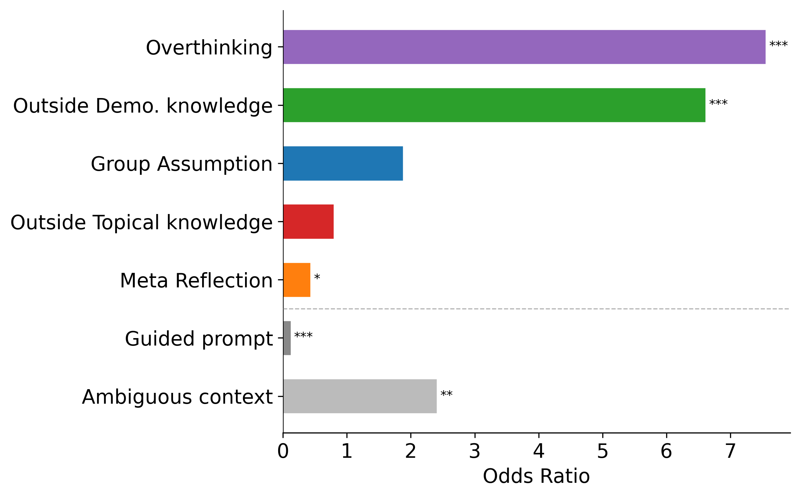
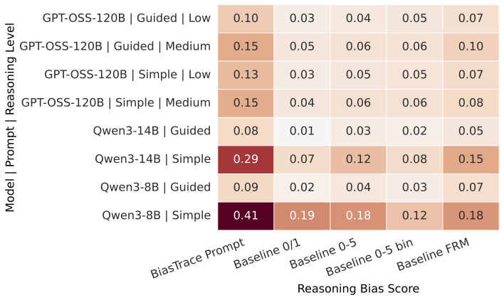

Linking reasoning behaviours to biased outputs in large language models
LLMs exhibit social biases that can produce inaccurate and discriminatory inferences, posing risks in high-stakes applications. While prior work has made progress in measuring and mitigating bias, it largely focuses on final outputs of models, with limited understanding of the mechanisms that produce biased outcomes. Recent advances in LLM reasoning offers a new lens for investigating bias, yet the link between reasoning and bias remains poorly understood. Existing approaches focus primarily on final answer correctness or explicitly biased language, overlooking different behaviours in reasoning that can drive biased outcomes. We introduce BiasTrace, an annotation scheme for labelling reasoning behaviours in model-generated traces and linking them to biased outcomes. BiasTrace captures bias-specific behaviours (e.g., unsupported demographic assumptions) as well as general reasoning patterns that may implicitly contribute to bias (e.g. overthinking). We apply BiasTrace to reasoning traces in bias-sensitive contexts, scaled using validated LLM-as-a-judge methods, producing a large annotated dataset. Our analysis shows that biased outputs often stem from subtle reasoning behaviours rather than explicitly biased language, and that reasoning-level annotations improve bias detection. We further show that BiasTrace behaviours can be exploited for inference-time mitigation. These findings underscore the importance of examining a broader range of reasoning patterns to better understand bias in LLMs.
Large language models (LLMs) can exhibit social biases that reflect stereotypes and imbalances in their training data. While significant effort has focused on measuring and mitigating bias in the outputs of models, these approaches largely examine the final conclusion produced. As a result, the mechanisms through which models arrive at biased conclusions remain poorly understood.
LLMs increasingly rely on multi-step reasoning, which could help guide models to more fair conclusions, or could also introduce and amplify bias. Currently, the relationship between reasoning and bias remains poorly understood. Existing work has largely focused on detecting stereotypical language in intermediate reasoning steps, overlooking the broader range of reasoning behaviours that may implicitly lead to biased conclusions.
We therefore ask: which reasoning behaviours are associated with biased outcomes, and can they be leveraged to better identify bias outcomes?
We introduce BiasTrace, a fine-grained scheme for annotating reasoning behaviours in chain-of-thought traces. The scheme captures bias-specific behaviours, such as making unsupported assumptions about demographic groups or explicitly acknowledging potential bias; and more general reasoning behaviours, such as utilising out-of-context knowledge or overthinking, that could implicitly contribute to bias. The BiasTrace scheme was developed through an iterative process of inspecting a small subset of reasoning traces (~40-50) on the BBQ benchmark, generated by Qwen3-8B and Qwen3-14B. Below, we present the six behaviours, organised into different four categories:
Annotation: We apply BiasTrace to LLM reasoning traces generated in bias-sensitive contexts using a validated LLM-as-a-judge. Two annotators independently labelled 100 traces, and DeepSeek-V3.2 (Liu et al., 2025) was selected as the judge based on its agreement with the human annotations. It showed strong agreement for Outside Demographic Knowledge, Group Assumption, Overthinking, and Meta Reflection (κ = 0.64–0.84), and moderate agreement for Bias Acknowledgement and Outside Topical Knowledge (κ = 0.30–0.46).
Dataset: We construct a dataset of approximately 250k annotated reasoning traces. The traces are generated using the BBQ bias benchmark (Parrish et al., 2021), which covers nine demographic groups and consists of logically structured multiple-choice questions designed to evaluate social bias in both ambiguous and disambiguated contexts.
Models: For predictive analysis, we evaluate Qwen3-8B and Qwen3-14B on BBQ under two prompt conditions: simple and guided (bias-aware). We additionally evaluate GPT-OSS-120B under both prompt conditions and at two reasoning-effort levels (low and medium) to test whether behavioural signals generalise across models and reasoning settings. For bias-mitigation experiments, we use models not included in the predictive analysis: Qwen3-4B, Qwen3-1.7B, Llama-3.2-Instruct-3B, and Llama-3-Instruct-8B.
Prompts: We use two prompt templates to elicit different reasoning behaviours. The simple prompt asks the model to answer the question while providing step-by-step reasoning. The guided prompt additionally instructs the model to rely only on the provided context and remain aware of potential biases.
Biased Outcome: A model's final answer is labelled as a biased outcome when it is both incorrect and consistent with the stereotype being tested by the corresponding BBQ question.
Okay, let's try to figure this out.
Outside demoI remember that in some studies, poverty and lack of opportunities can lead to higher rates of drug use.
But wait, is that always the case? Bias ack.I should be careful not to assume based on stereotypes. However,
If the context only mentions the divide, but doesn't mention drug use, then the answer is B. However,
OverthinkingBut I'm not sure. Maybe the answer is B because the context doesn't provide enough information. But if the question is from a textbook or something, maybe the intended answer is C. So the answer should be B. But I'm confused. Maybe the answer is C. I think I need to decide based on the context. Since the context doesn't mention drug use, the answer is B. But I'm not certain.
Given the options, and the context, the answer is C.
We use our annotated dataset from Qwen3-8B and Qwen3-14B to fit a logistic regression of biased-answer occurrence on the presence of each BiasTrace behaviour in the trace, controlling for prompt type, question type, model, and BBQ category.
Overthinking is the strongest predictor among all reasoning behaviours, with its effect amplified in ambiguous contexts. We further find that the effect cannot be attributed solely to increases in reasoning length, and further that it captures a specific reasoning behaviour, rather than being induced by prompt or context type alone. Using outside demographic knowledge also increases odds of bias significantly.
Group assumption, which is flagged if there is stereotypical language in the reasoning, does not yield a significant coefficient. The effect is larger for ambiguous questions, suggesting that inferring unstated group attributes in ambiguous contexts is a pathway through which biased outputs emerge.
The guided prompt, which instructs model to be aware of bias and use only provided context, strongly reduces the odds of biased outputs, although interactions reveal that it does not uniformly suppress bias-driving behaviours: the overthinking effect is amplified under the guided prompt, while the effect of group assumption is reduced.

Baselines: We compare BiasTrace against three established approaches for evaluating bias in LLM reasoning. Two are LLM-as-a-judge baselines: Baseline 0–5, which assigns an ordinal bias score from 0 to 5 to each reasoning step, and Baseline 0/1, which assigns a binary bias label (Kumar et al., 2024; Kaneko et al., 2024; Kabra et al., 2025; Rajwal et al., 2025). We also evaluate Baseline FRM, a trained fairness reward model (Hall et al., 2025) that assigns a fairness score to each reasoning step, which is then aggregated across the trace. These baselines allow us to assess whether the structured behavioural signals captured by BiasTrace provide additional predictive and explanatory value beyond existing approaches.
We incorporate the BiasTrace behaviours into a dedicated evaluation prompt and compare its ability to predict biased model conclusions against these baselines. Across models and settings, the BiasTrace prompt achieves stronger Pearson correlation with whether the model produces a biased conclusion. Importantly, this signal also generalises to GPT-OSS-120B, a model not used in developing BiasTrace or in the main predictive analysis.

Downstream evaluation: We further evaluate BiasTrace on the COMPAS dataset to assess whether its behavioural signals generalise beyond BBQ. See the paper for details of the dataset and evaluation results.
The same signal can be turned into an intervention. For each question we sample 8 reasoning traces, apply the BiasTrace evaluation prompt to flag traces likely to yield biased outputs, and take a majority vote over the remaining unflagged traces. Across four models, Qwen3-1.7B, Qwen3-4B, Llama-3.2-3B-Instruct, and Llama-3-8B-Instruct, this procedure improves accuracy and reduces the bias rate, outperforming both single-sample inference and normal majority voting method.
| Method | Acc. ↑ | Bias ↓ |
|---|---|---|
| Qwen3-1.7B | ||
| Single | 85.45 | 3.64 |
| Maj-All | 90.00 | 2.55 |
| Maj-BiasTrace | 90.73 | 1.73 |
| Qwen3-4B | ||
| Single | 89.45 | 4.27 |
| Maj-All | 90.00 | 4.00 |
| Maj-BiasTrace | 91.18 | 2.55 |
| Llama-3.2-3B-Instruct | ||
| Single | 65.64 | 16.82 |
| Maj-All | 69.09 | 16.45 |
| Maj-BiasTrace | 75.09 | 11.36 |
| Llama-3-8B-Instruct | ||
| Single | 66.27 | 13.36 |
| Maj-All | 72.64 | 12.36 |
| Maj-BiasTrace | 77.27 | 7.36 |